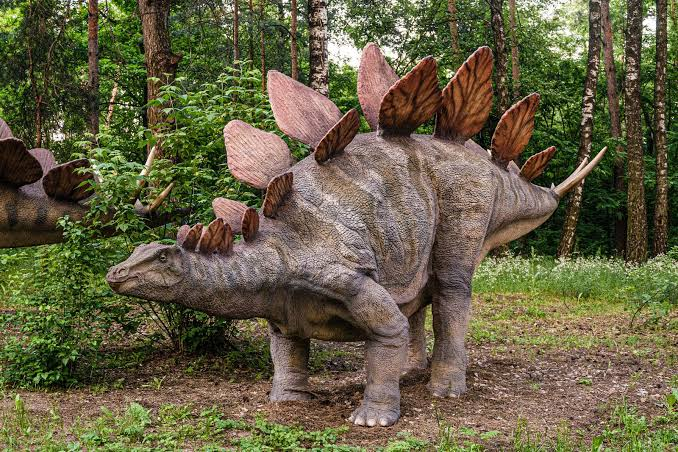

Meat‑eating dinosaurs — the theropods — were some of the most diverse, specialized, and ecologically important animals of the Mesozoic. They ranged from small, bird‑like insect hunters to the colossal apex predators that dominate popular imagination. What unites them is a shared evolutionary toolkit: hollow bones, three‑toed limbs, and a primarily carnivorous ancestry. But within that framework, they exploded into an astonishing variety of forms and feeding strategies.
At the top of the food chain were giants like Tyrannosaurus rex, Giganotosaurus, and Carcharodontosaurus. These predators combined powerful jaws, serrated teeth, and advanced sensory systems to take down large herbivores. T. rex, for example, had a bite force estimated at over 8,000 pounds — strong enough to crush bone — and forward‑facing eyes that gave it excellent depth perception. Other theropods, like Velociraptor and Deinonychus, relied more on agility, pack behavior (at least in some interpretations), and sickle‑shaped claws for slashing and gripping prey.
But not all carnivorous dinosaurs were built for brute force. Some, like Compsognathus, hunted small vertebrates and insects. Others, like Spinosaurus, evolved long, crocodile‑like snouts and conical teeth suited for catching fish, suggesting a semi‑aquatic lifestyle. And as the lineage continued to evolve, some theropods shifted away from strict carnivory — eventually giving rise to birds, many of which diversified into omnivores and herbivores. So “meat‑eating dinosaurs” isn’t a single type — it’s an entire evolutionary spectrum, from bone‑crushers to fish‑spearing specialists to feathered, agile hunters.
Dinosaurs were big, amazing animals that lived a very long time ago.
Some were gentle and ate plants, while others were fierce and chased other animals. They came in many shapes and sizes — some had long necks, some had sharp teeth, and some even had horns or plates on their backs. Even though dinosaurs aren’t alive today, we can learn about them by studying their bones.